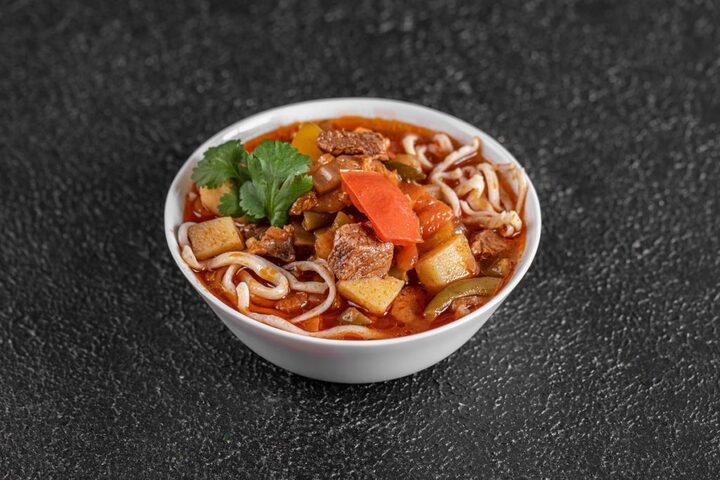

Uzbek Lagman

Description
Uzbek Lagman is a recipe filled with many unique flavors. It’s something between a hearty soup and a light pasta. Meat with onions, carrots, potatoes, peppers, tomatoes and onions mixed with spices and cooked as a soup, then served over pasta.
Ingredients
- 3 Tbsp canola oil
- 500 g beef
- 1 medium onion, chopped
- 1 large carrot, cubed
- 420 g potatoes, cubed
- 1/2 large red pepper, cubed
- 2 large tomatoes, fines diced
- 3 garlic cloves, minced
- 2 ½ tsp salt
- ½ tsp ground black pepper
- 1 ¼ tsp ground coriander
- 1 ¼ tsp ground cumin
- 1 small star anise (if large cut in half)
- 2 bay leaves
- 1.5 kg water
- 250 g linguine pasta
- green onion (optional)
Steps
- Cook the pasta according to the instructions. Drain and rinse with cold water. Keep covered until ready to use so it does not dry out.
- Cube the meat into small cubes. In a dutch oven, heat oil. Once hot add meat, cook about 5 minutes.
- Meanwhile, finely chop the onions. Finely dice tomatoes. Cube carrots and peppers into even sizes. Cube potatoes into small cubes.
- Add onions to the meat in the Dutch oven. Turn heat down to medium heat, cook until onions are tender.
- Clean heads of garlic from the remains of roots and dirt.
- Add tomatoes and garlic, cook 2 minutes, stirring as needed.
- Add potatoes, carrots, peppers and mix well.
- Pour in water, seasonings and bay leaves, star anise and cook about 20-25 minutes, until all of the vegetables are tender. Remove star anise once the soup is cooked.
- Meanwhile, cook pasta. Drain and return to pot, cover to prevent from drying out.
- Serve hearty soup over pasta.
Back to main page